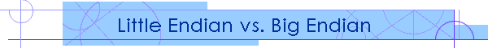

[Note: This was originally written for "FYI", the internal newsletter for the worldwide software engineering departments of Dendrite International]
Usually, the first thing a programmer who is used to larger machines says when encountering a Intel-based system is, "Why do they store their numbers backwards?" The answer is, of course, that they don’t. The technical phrasing of the question is "Why does Intel uses ‘Little Endian’ addressing as supposed to ‘Big Endian’ ?", which is somewhat less judgmental on which is the "correct" way of doing it. For good reason—there are strong arguments that Little Endian is the "logical" way to do it.
Computer memory is a rather nebulous thing. How can you say that one byte is to the "left" or the "right" of another byte in memory. You can point to a hex dump, but that’s merely one particular graphic representation of the computer memory. And it’s not the only one, nor is it necessarily the "best" or "correct" one.
Consider for a moment how we number the bits in a byte. Most sensible programmers would number the rightmost bit "0", the bit to the left of that "1", the next "2" and so on, with each label corresponding to the power of two it represents. (Note: In IBM 370 assembler, bits are numbered 1 to 32, left to right, which is why I started that last sentence "Most sensible programmers... ")
So, let us ponder a number made up of just one bit—that bit is placed in address 0. If we wished to expand it to two bits, the original bit stays where it is at address 0, and the new bit is added to the left, at address 1. You will notice that we can make this number any size, simply by adding digits to the left.
Now, we extend this idea to bytes. A number made up of just one byte would have that byte placed at address 0.
0 1 2 3 4 5 6 7 8 9 A B C D E F 0000 21 00 00 00 00 00 00 00 00 00 00 00 00 00 00 00
But now, how do we expand this number to two bytes? We have two options here. We could allow it to grow towards the right - the Intel (little endian form).
0 1 2 3 4 5 6 7 8 9 A B C D E F 0000 21 43 00 00 00 00 00 00 00 00 00 00 00 00 00 00
This puts the numbers "backwards", but allows us to extend the size of number to the limits of memory without actually changing it’s values (i.e. "21 43", "21 43 00", and "21 43 00 00" are all the same number).
Alternately, we could slide the first byte to the right, changing it’s address, and then extend the number toward the left (the big endian form)
0 1 2 3 4 5 6 7 8 9 A B C D E F 0000 43 21 00 00 00 00 00 00 00 00 00 00 00 00 00 00
This keeps the digits in the correct order, but forces a definite size into the number (i.e. "43 21", "43 21 00", and "43 21 00 00" refer to three different values).
Neither method works the same as it did with bits. The problem is, basically, that we don’t address bytes the same way as we address bits (left-to-right vs. right-to-left). However, there’s nothing really forcing us to number bytes from left to right. If we wanted to, we could number them right to left. If we were to do so, the above exercise takes on a whole new look:
F E D C B A 9 8 7 6 5 4 3 2 1 0 0000 00 00 00 00 00 00 00 00 00 00 00 00 00 00 00 21
grows to become either (Little Endian):
F E D C B A 9 8 7 6 5 4 3 2 1 0 0000 00 00 00 00 00 00 00 00 00 00 00 00 00 00 43 21
or (Big Endian)
F E D C B A 9 8 7 6 5 4 3 2 1 0 0000 00 00 00 00 00 00 00 00 00 00 00 00 00 00 21 43
Suddenly, the little endian version not only looks correct, but also reactions correctly, as it can grow to the left without affecting it’s existing bytes. And, just as suddenly, the big endian method turns onto a bizarre rogue whose byte ordering doesn’t follow any of the "rules".
A few months ago, a problem arose as we converted the host from a 32-bit to 64-bit machine. The original machines—RS/6000s were big endian machine, while the new systems, DEC Alphas, used little endian. The problem was partly caused by the difference in word size, but the fact that the old machines had their numbers "backwards" was involved. The example given in the Dec. 93 FYI was of the number 3781 which the IBMs wanted represented as "00 00 0E C6", but which the Alpha represented as "C6 0E 00 00 00 00 00 00". Had the old machines used the little endian method, either machine could have read it’s choice of either the first 32 bits or the entire 64 bits of a single file, and the same number would have been yielded.
So, why do most hex listing of memory display the numbers left to right?—Habit mostly. English is read left to right, so that’s the natural way you’d lay out a listing if you were writing such a utility. (Perhaps one of our readers whose native language is written in a different direction could confirm or deny that nature would lead them to design it differently). This is an important consideration since most hex dump have an ASCII (or EBCDIC) representation of the data right next to them, and that has it be printed right to left if it is to be readable, but that should have no bearing on what is the "proper" way to present purely numeric data.

Copyright © 1994, James M. Curran